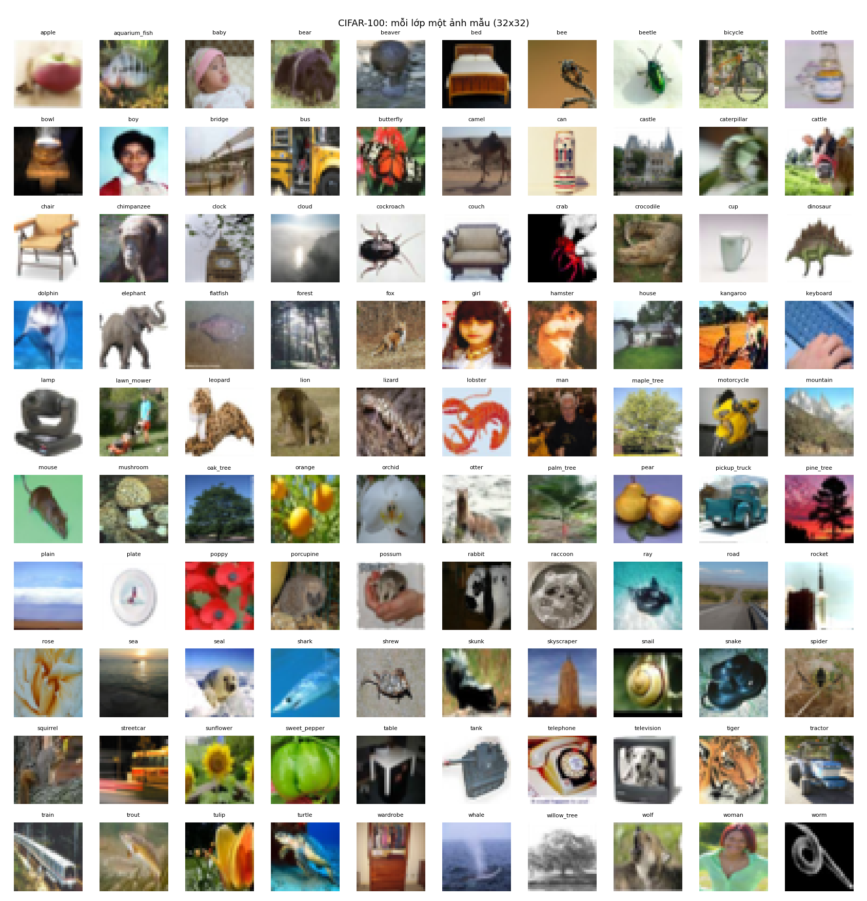
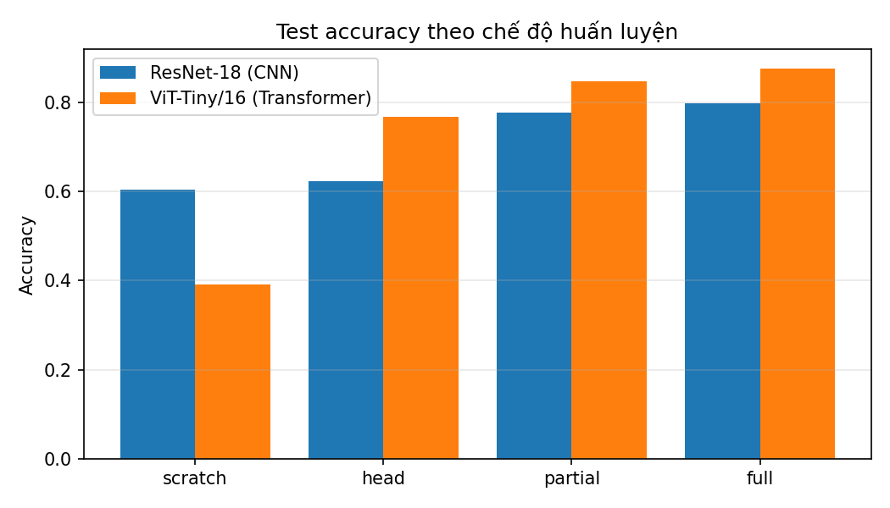
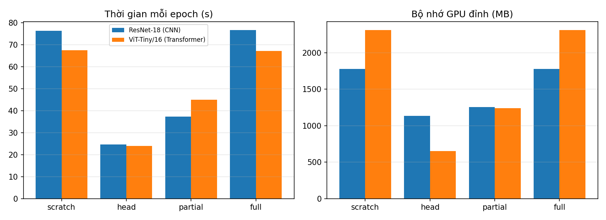
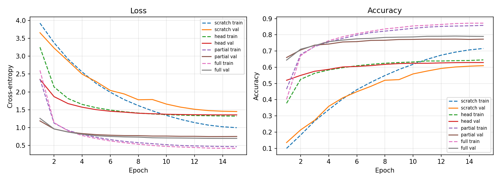
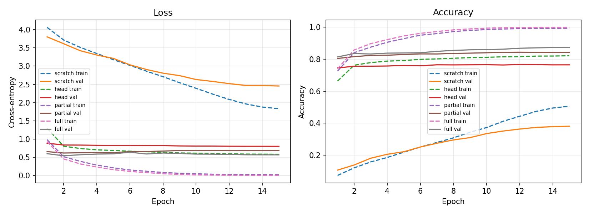

CO5085 – Học sâu và ứng dụng trong thị giác máy tính – HK 261 (2026–2027)
CIFAR-100 gồm 60.000 ảnh màu 32×32 thuộc 100 lớp. Dùng toàn bộ 50.000 ảnh train gốc, tách 450 ảnh/lớp làm train (45.000) và 50 ảnh/lớp làm validation (5.000, seed 42); test là 10.000 ảnh gốc (100 ảnh/lớp). Nhiều cặp lớp giống nhau (các loại cây, nhóm người), nên phân tích lỗi có ý nghĩa. Giấy phép: tập công khai của Krizhevsky (2009); thẻ dataset chính thức trên Hugging Face ghi license là “unknown”, nhóm chỉ dùng cho học tập.

Ảnh giữ dạng tensor uint8 trong DataLoader (batch 128). Trên GPU: random crop (đệm 4 pixel) và lật ngang cho tập train; sau đó phóng to bilinear lên 224×224 và chuẩn hóa theo cấu hình pretrained của timm. Mixed precision (fp16).
8 cấu hình = 2 kiến trúc × 4 chế độ; AdamW, lịch cosine, 15 epoch, seed 42, vòng lặp huấn luyện tự viết. Chọn epoch theo validation accuracy, đo test một lần. Trọng số pretrained: ResNet-18 resnet18.a1_in1k (ImageNet-1k), ViT-Tiny vit_tiny_patch16_224.augreg_in21k_ft_in1k (ImageNet-21k rồi ImageNet-1k).
| Kiến trúc | Chế độ | Trainable | Val acc | Test acc | Macro-F1 | s/epoch | Bộ nhớ đỉnh (MB) |
|---|---|---|---|---|---|---|---|
| ResNet-18 | scratch | 11.227.812 | 0,6098 | 0,6038 | 0,6030 | 76,3 | 1779 |
| ResNet-18 | head | 51.300 | 0,6290 | 0,6233 | 0,6206 | 24,6 | 1135 |
| ResNet-18 | partial | 10.544.740 | 0,7736 | 0,7780 | 0,7773 | 37,3 | 1256 |
| ResNet-18 | full | 11.227.812 | 0,7924 | 0,7982 | 0,7981 | 76,6 | 1778 |
| ViT-Tiny/16 | scratch | 5.543.716 | 0,3802 | 0,3911 | 0,3829 | 67,6 | 2309 |
| ViT-Tiny/16 | head | 19.300 | 0,7668 | 0,7675 | 0,7673 | 24,0 | 651 |
| ViT-Tiny/16 | partial | 2.688.868 | 0,8438 | 0,8478 | 0,8475 | 44,9 | 1241 |
| ViT-Tiny/16 | full | 5.543.716 | 0,8730 | 0,8754 | 0,8753 | 67,2 | 2309 |




Chi tiết xem báo cáo PDF.